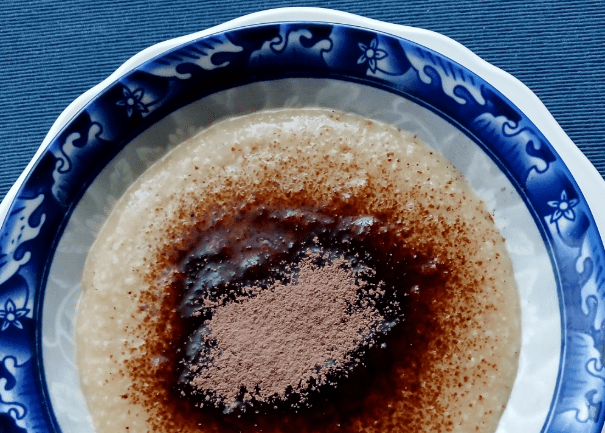

Odin Recipes

Picture
from Nature Cookta
Description
This is a recipe about a traditional hungarian sweet meal which many children like, the so called "tejbegríz"
(semolina porridge).
It is mostly eaten for lunch or for supper. This particular recipe is how we do it in our family.
Ingredients (yields one dl porridge, generally for an adult multiply it with 2 or 3)
- 1 dl of soymilk (or any preferred plant-based milk alternative)
- 1 tbsp semolina (we use a normal spoon for this; for a more fluid porridge use an only slightly heaped spoon
of
semolina)
- only add once:
- pinch of salt
- pinch of vanilla
Steps
- Pour the soymilk (or your choice of milk) to a pot and bring it to steaming but no simmering or boiling yet.
- Add the semolina, salt and vanilla and continously stir until it starts boiling.
- Cook for at least one minute. The thicker you want to have it, the longer it needs to be cooked. Should it
be too fluid, just add some
more
semolina and bring it to a boil, cook until desired consistency is reached.
- It can be topped with fruits, cocoa powder, cinnamon and some kind of sweet syrup if you like it that sweet.
Enjoy.